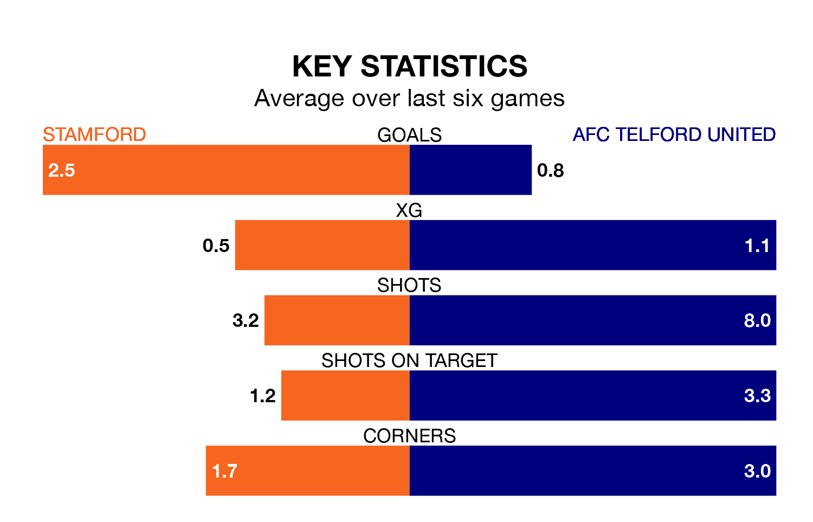

Stamford face a challenge to maintain their high-scoring form at home against a tight AFC Telford United defence on Tuesday.
With 52 goals in 25 games, Stamford are the third-highest scorers in Southern League Premier Central ahead of the 7.45pm kick-off.
They face a Bucks side who have scored 35 in 24 matches, but conceded only 20 goals, putting them second among the league's tightest defences – only Needham Market have conceded fewer goals.
Telford United are sixth in the table after 24 games, of which they have won 11 and drawn eight, earning 41 points.
Stamford are one place behind the Bucks in seventh, with 11 wins and eight draws putting them on the same number of points.
The home side are in mixed form in Southern League Premier Central, with two wins and three draws from their last six games.
With three wins and three draws over that period, the visitors' form is better – they have taken 12 points from 18, compared to Stamford's nine.
Stamford's last match was on Saturday, a 2-2 draw against Redditch United.
Telford United drew 0-0 with Leiston last time out, also on Saturday.
Updated: 14:53 (UTC), 16/01/24